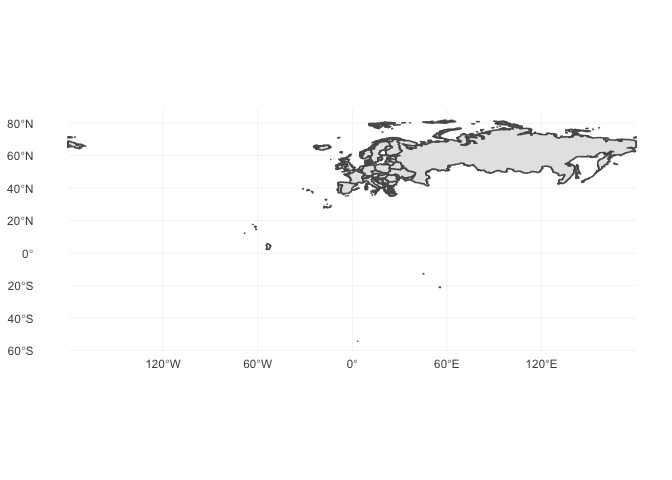
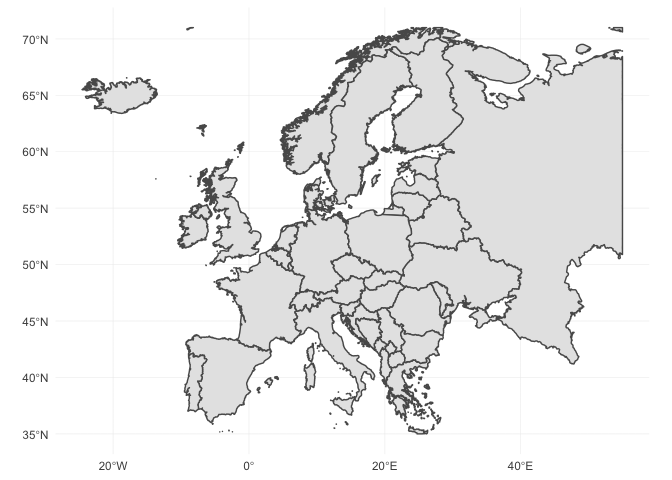
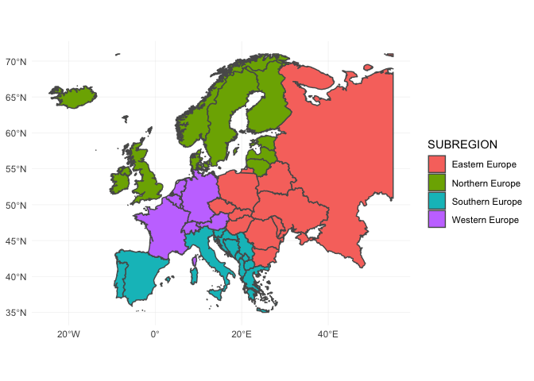
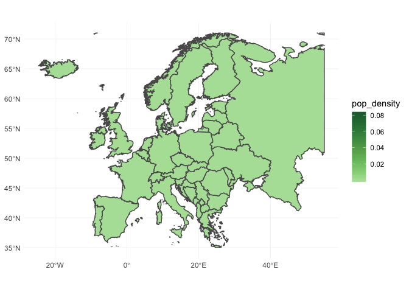
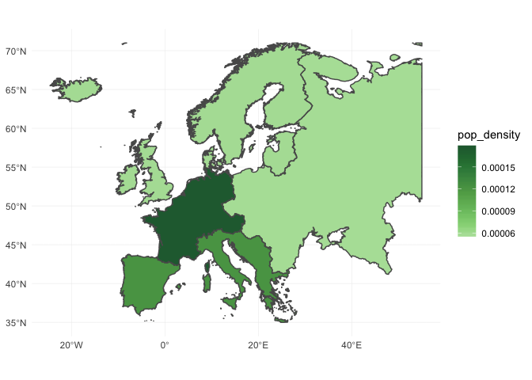
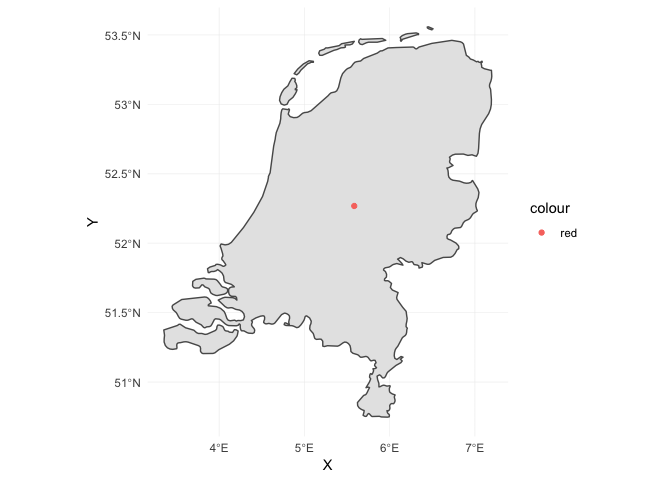

Map Plots in R in a Tidyverse Way
I show how you can plot your own map in R using a few lines of code using a pipe-based workflow. Several powerful functions of the sf packages are presented.
Analysis
This week I worked on a project for which I needed to create a map plot with some statistics for selected European countries; I was unfamiliar with this kind of plots, so I searched online for possible solutions. I like the tidyverse workflow, so I naturally looked for any tutorials using this style. The first hit was informative, but it didn’t have a high resolution map for Europe. Furthermore, I like to be able to use any custom map, so I searched for ways to import a custom map.
naturalearthdata.com provides many open-source maps. I decided to select the world map with country borders on a 1:10m scale (can be found here).
library(sf) # For handling geospatial data
library(ggplot2) # Plotting library
library(dplyr) # Data manipulation in tidyverse way
library(ggthemes) # Additional themese for the ggplot2 library
library(knitr) # Nice tables for this document
# This will create a natural-earth subfolder with the map data in the data folder.
if (!file.exists("data/natural-earth")) {
tmp_file <- tempfile(fileext=".zip")
download.file("https://www.naturalearthdata.com/http//www.naturalearthdata.com/download/10m/cultural/ne_10m_admin_0_countries.zip",
tmp_file)
unzip(tmp_file, exdir = "data/natural-earth")
}Importing these maps, however, was not straightforward to me. These lecture slides provides a way to import custom maps, but the syntax of the sp package seems very untuitive with S4 objects for the polygons. Furthermore, the SpatialDataFrame objects do not support a pipe-based workflow. However, this tutorial presents how the modern sf package can be used to manipulate, plot and import spatial data in a tidyverse manner.
Importing our world map is as easy as
map_data <- st_read("data/natural-earth/", "ne_10m_admin_0_countries")## Reading layer `ne_10m_admin_0_countries' from data source `Map-Plotting/data/natural-earth' using driver `ESRI Shapefile'
## Simple feature collection with 255 features and 94 fields
## geometry type: MULTIPOLYGON
## dimension: XY
## bbox: xmin: -180 ymin: -90 xmax: 180 ymax: 83.6341
## epsg (SRID): 4326
## proj4string: +proj=longlat +datum=WGS84 +no_defsThe map_data uses data.frames for its features and saves the geometric features as a list in the column geometry. We can now easily explore the data in map_data, e.g.,
features_map_data <- map_data %>%
as_tibble() %>%
select(-geometry) %>%
head(10)
kable(features_map_data)| featurecla | scalerank | LABELRANK | SOVEREIGNT | SOV_A3 | ADM0_DIF | LEVEL | TYPE | ADMIN | ADM0_A3 | GEOU_DIF | GEOUNIT | GU_A3 | SU_DIF | SUBUNIT | SU_A3 | BRK_DIFF | NAME | NAME_LONG | BRK_A3 | BRK_NAME | BRK_GROUP | ABBREV | POSTAL | FORMAL_EN | FORMAL_FR | NAME_CIAWF | NOTE_ADM0 | NOTE_BRK | NAME_SORT | NAME_ALT | MAPCOLOR7 | MAPCOLOR8 | MAPCOLOR9 | MAPCOLOR13 | POP_EST | POP_RANK | GDP_MD_EST | POP_YEAR | LASTCENSUS | GDP_YEAR | ECONOMY | INCOME_GRP | WIKIPEDIA | FIPS_10_ | ISO_A2 | ISO_A3 | ISO_A3_EH | ISO_N3 | UN_A3 | WB_A2 | WB_A3 | WOE_ID | WOE_ID_EH | WOE_NOTE | ADM0_A3_IS | ADM0_A3_US | ADM0_A3_UN | ADM0_A3_WB | CONTINENT | REGION_UN | SUBREGION | REGION_WB | NAME_LEN | LONG_LEN | ABBREV_LEN | TINY | HOMEPART | MIN_ZOOM | MIN_LABEL | MAX_LABEL | NE_ID | WIKIDATAID | NAME_AR | NAME_BN | NAME_DE | NAME_EN | NAME_ES | NAME_FR | NAME_EL | NAME_HI | NAME_HU | NAME_ID | NAME_IT | NAME_JA | NAME_KO | NAME_NL | NAME_PL | NAME_PT | NAME_RU | NAME_SV | NAME_TR | NAME_VI | NAME_ZH |
|---|---|---|---|---|---|---|---|---|---|---|---|---|---|---|---|---|---|---|---|---|---|---|---|---|---|---|---|---|---|---|---|---|---|---|---|---|---|---|---|---|---|---|---|---|---|---|---|---|---|---|---|---|---|---|---|---|---|---|---|---|---|---|---|---|---|---|---|---|---|---|---|---|---|---|---|---|---|---|---|---|---|---|---|---|---|---|---|---|---|---|---|---|---|
| Admin-0 country | 5 | 2 | Indonesia | IDN | 0 | 2 | Sovereign country | Indonesia | IDN | 0 | Indonesia | IDN | 0 | Indonesia | IDN | 0 | Indonesia | Indonesia | IDN | Indonesia | NA | Indo. | INDO | Republic of Indonesia | NA | Indonesia | NA | NA | Indonesia | NA | 6 | 6 | 6 | 11 | 260580739 | 17 | 3028000 | 2017 | 2010 | 2016 |
|
|
-99 | ID | ID | IDN | IDN | 360 | 360 | ID | IDN | 23424846 | 23424846 | Exact WOE match as country | IDN | IDN | -99 | -99 | Asia | Asia | South-Eastern Asia | East Asia & Pacific | 9 | 9 | 5 | -99 | 1 | 0 | 1.7 | 6.7 | 1159320845 | Q252 | إندونيسيا | ইন্দোনেশিয়া | Indonesien | Indonesia | Indonesia | Indonésie | Ινδονησία | इंडोनेशिया | Indonézi | a Indonesia | Indonesia | インドネシア | 인도네시아 | Indonesië | Indonezja | Indonési | a Индонезия | Indonesie | n Endonezya | Indonesia | 印度尼西亚 |
| Admin-0 country | 5 | 3 | Malaysia | MYS | 0 | 2 | Sovereign country | Malaysia | MYS | 0 | Malaysia | MYS | 0 | Malaysia | MYS | 0 | Malaysia | Malaysia | MYS | Malaysia | NA | Malay. | MY | Malaysia | NA | Malaysia | NA | NA | Malaysia | NA | 2 | 4 | 3 | 6 | 31381992 | 15 | 863000 | 2017 | 2010 | 2016 |
|
|
-99 | MY | MY | MYS | MYS | 458 | 458 | MY | MYS | 23424901 | 23424901 | Exact WOE match as country | MYS | MYS | -99 | -99 | Asia | Asia | South-Eastern Asia | East Asia & Pacific | 8 | 8 | 6 | -99 | 1 | 0 | 3.0 | 8.0 | 1159321083 | Q833 | ماليزيا | মালয়েশিয়া | Malaysia | Malaysia | Malasia | Malaisie | Μαλαισία | मलेशिया | Malajzia | Malaysia | Malesia | マレーシア | 말레이시아 | Maleisië | Malezja | Malásia | Малайзия | Malaysia | Malezya | Malaysia | 马来西亚 |
| Admin-0 country | 6 | 2 | Chile | CHL | 0 | 2 | Sovereign country | Chile | CHL | 0 | Chile | CHL | 0 | Chile | CHL | 0 | Chile | Chile | CHL | Chile | NA | Chile | CL | Republic of Chile | NA | Chile | NA | NA | Chile | NA | 5 | 1 | 5 | 9 | 17789267 | 14 | 436100 | 2017 | 2002 | 2016 |
|
|
-99 | CI | CL | CHL | CHL | 152 | 152 | CL | CHL | 23424782 | 23424782 | Exact WOE match as country | CHL | CHL | -99 | -99 | South America | Americas | South America | Latin America & Caribbean | 5 | 5 | 5 | -99 | 1 | 0 | 1.7 | 6.7 | 1159320493 | Q298 | تشيلي | চিলি | Chile | Chile | Chile | Chili | Χιλή | चिली | Chile | Chili | Cile | チリ | 칠레 | Chili | Chile | Chile | Чили | Chile | Şili | Chile | 智利 |
| Admin-0 country | 0 | 3 | Bolivia | BOL | 0 | 2 | Sovereign country | Bolivia | BOL | 0 | Bolivia | BOL | 0 | Bolivia | BOL | 0 | Bolivia | Bolivia | BOL | Bolivia | NA | Bolivia | BO | Plurinational State of Bolivia | NA | Bolivia | NA | NA | Bolivia | NA | 1 | 5 | 2 | 3 | 11138234 | 14 | 78350 | 2017 | 2001 | 2016 |
|
|
-99 | BL | BO | BOL | BOL | 068 | 068 | BO | BOL | 23424762 | 23424762 | Exact WOE match as country | BOL | BOL | -99 | -99 | South America | Americas | South America | Latin America & Caribbean | 7 | 7 | 7 | -99 | 1 | 0 | 3.0 | 7.5 | 1159320439 | Q750 | بوليفيا | বলিভিয়া | Bolivien | Bolivia | Bolivia | Bolivie | Βολιβία | बोलिविया | Bolívia | Bolivia | Bolivia | ボリビア | 볼리비아 | Bolivia | Boliwia | Bolívia | Боливия | Bolivia | Bolivya | Bolivia | 玻利維亞 |
| Admin-0 country | 0 | 2 | Peru | PER | 0 | 2 | Sovereign country | Peru | PER | 0 | Peru | PER | 0 | Peru | PER | 0 | Peru | Peru | PER | Peru | NA | Peru | PE | Republic of Peru | NA | Peru | NA | NA | Peru | NA | 4 | 4 | 4 | 11 | 31036656 | 15 | 410400 | 2017 | 2007 | 2016 |
|
|
-99 | PE | PE | PER | PER | 604 | 604 | PE | PER | 23424919 | 23424919 | Exact WOE match as country | PER | PER | -99 | -99 | South America | Americas | South America | Latin America & Caribbean | 4 | 4 | 4 | -99 | 1 | 0 | 2.0 | 7.0 | 1159321163 | Q419 | بيرو | পেরু | Peru | Peru | Perú | Pérou | Περού | पेरू | Peru | Peru | Perù | ペルー | 페루 | Peru | Peru | Peru | Перу | Peru | Peru | Peru | 秘鲁 |
| Admin-0 country | 0 | 2 | Argentina | ARG | 0 | 2 | Sovereign country | Argentina | ARG | 0 | Argentina | ARG | 0 | Argentina | ARG | 0 | Argentina | Argentina | ARG | Argentina | NA | Arg. | AR | Argentine Republic | NA | Argentina | NA | NA | Argentina | NA | 3 | 1 | 3 | 13 | 44293293 | 15 | 879400 | 2017 | 2010 | 2016 |
|
|
-99 | AR | AR | ARG | ARG | 032 | 032 | AR | ARG | 23424747 | 23424747 | Exact WOE match as country | ARG | ARG | -99 | -99 | South America | Americas | South America | Latin America & Caribbean | 9 | 9 | 4 | -99 | 1 | 0 | 2.0 | 7.0 | 1159320331 | Q414 | الأرجنتين | আর্জেন্টিনা | Argentinien | Argentina | Argentina | Argentine | Αργεντινή | अर्जेण्टीना | Argentí | na Argentina | Argentina | アルゼンチン | 아르헨티나 | Argentinië | Argentyna | Argenti | na Аргентина | Argentin | a Arjantin | Argentina | 阿根廷 |
| Admin-0 country | 3 | 3 | United Kingdom | GB1 | 1 | 2 | Dependency | Dhekelia Sovereign Base Area | ESB | 0 | Dhekelia Sovereign Base Area | ESB | 0 | Dhekelia Sovereign Base Area | ESB | 0 | Dhekelia | Dhekelia | ESB | Dhekelia | NA | Dhek. | DH | NA | NA | NA | U.K. Base | NA | Dhekelia Sovereign Base Area | NA | 6 | 6 | 6 | 3 | 7850 | 5 | 314 | 2013 | -99 | 2013 |
|
|
-99 | -99 | -99 | -99 | -99 | -99 | -099 | -99 | -99 | -99 | -99 | No WOE equivalent. | GBR | ESB | -99 | -99 | Asia | Asia | Western Asia | Europe & Central Asia | 8 | 8 | 5 | 3 | -99 | 0 | 6.5 | 11.0 | 1159320709 | Q9206745 | ديكيليا كانتونمنت | দেখেলিয়া ক্যান্টনমেন্ | ট Dekelia | Dhekelia Cantonment | Dekelia | Dhekelia | Ντεκέλια Κάντονμεντ | ढेकेलिया छावनी | Dekéli | a Dhekelia Cantonment | Base di Dheke | lia デケリア | 데켈리아 지 | 역 Dhekelia Cantonme | nt Dhekelia | Dekeli | a Декелия | Dhekeli | a Dhekelia Kantonu | Căn cứ quân sự Dhekelia | NA |
| Admin-0 country | 6 | 5 | Cyprus | CYP | 0 | 2 | Sovereign country | Cyprus | CYP | 0 | Cyprus | CYP | 0 | Cyprus | CYP | 0 | Cyprus | Cyprus | CYP | Cyprus | NA | Cyp. | CY | Republic of Cyprus | NA | Cyprus | NA | NA | Cyprus | NA | 1 | 2 | 3 | 7 | 1221549 | 12 | 29260 | 2017 | 2001 | 2016 |
|
|
-99 | CY | CY | CYP | CYP | 196 | 196 | CY | CYP | -90 | 23424994 | WOE lists as subunit of united Cyprus | CYP | CYP | -99 | -99 | Asia | Asia | Western Asia | Europe & Central Asia | 6 | 6 | 4 | -99 | 1 | 0 | 4.5 | 9.5 | 1159320533 | Q229 | قبرص | সাইপ্রাস | Republik Zypern | Cyprus | Chipre | Chypre | Κύπρος | साइप्रस | Ciprus | Siprus | Cipro | キプロス | 키프로스 | Cyprus | Cypr | Chipre | Кипр | Cypern | Kıbrıs Cumhuriyeti | Cộng hòa Síp | 賽普勒斯 |
| Admin-0 country | 0 | 2 | India | IND | 0 | 2 | Sovereign country | India | IND | 0 | India | IND | 0 | India | IND | 0 | India | India | IND | India | NA | India | IND | Republic of India | NA | India | NA | NA | India | NA | 1 | 3 | 2 | 2 | 1281935911 | 18 | 8721000 | 2017 | 2011 | 2016 |
|
|
-99 | IN | IN | IND | IND | 356 | 356 | IN | IND | 23424848 | 23424848 | Exact WOE match as country | IND | IND | -99 | -99 | Asia | Asia | Southern Asia | South Asia | 5 | 5 | 5 | -99 | 1 | 0 | 1.7 | 6.7 | 1159320847 | Q668 | الهند | ভারত | Indien | India | India | Inde | Ινδία | भारत | India | India | India | インド | 인도 | India | Indie | Índia | Индия | Indien | Hindistan | Ấn Độ | 印度 |
| Admin-0 country | 0 | 2 | China | CH1 | 1 | 2 | Country | China | CHN | 0 | China | CHN | 0 | China | CHN | 0 | China | China | CHN | China | NA | China | CN | People’s Republic of China | NA | China | NA | NA | China | NA | 4 | 4 | 4 | 3 | 1379302771 | 18 | 21140000 | 2017 | 2010 | 2016 |
|
|
-99 | CH | CN | CHN | CHN | 156 | 156 | CN | CHN | 23424781 | 23424781 | Exact WOE match as country | CHN | CHN | -99 | -99 | Asia | Asia | Eastern Asia | East Asia & Pacific | 5 | 5 | 5 | -99 | 1 | 0 | 1.7 | 5.7 | 1159320471 | Q148 | جمهورية الصين الشعبية | গণপ্রজাতন্ত্রী চীন | Volksrepublik China | People’s Republic of China | República Popular China | République populaire de Chine | Λαϊκή Δημοκρατία της Κίνας | चीनी जनवादी गणराज् | य Kína | Republik Rakyat Tiongko | k Cina | 中華人民共和国 | 중화인민공화국 | Volksrepubliek China | Chińska Republika Ludowa | China | Китайская Народная Республика | Kina | Çin Halk Cumhuriyeti | Cộng hòa Nhân dân Trung Hoa | 中华人民共和国 |
For this tutorial we want to focus on a European countries, hence we need to filter the data to only contain the european countries’ info. Fortunately, the map_data contains a feature CONTINTENT, so we can easily filter out the unwanted countries.
europe_map_data <- map_data %>%
select(NAME, CONTINENT, SUBREGION, POP_EST) %>%
filter(CONTINENT == "Europe")Lets try to plot a map of European countries. New versions of ggplot2 contain a function geom_sf which supports plotting sf objects directly, so lets try it…
ggplot(europe_map_data) + geom_sf() +
theme_minimal()
That does not seem to work… the reason is that, even though we removed the data of non European countries, we never changed the bbox setting of our data. The bbox object sets the longitude and latitude range for our plot, which is still for the whole europe. To change this we can use the st_crop function as
europe_map_data <- europe_map_data %>%
st_crop(xmin=-25, xmax=55, ymin=35, ymax=71)
## although coordinates are longitude/latitude, st_intersection assumes that they are planar
## Warning: attribute variables are assumed to be spatially constant
## throughout all geometries
ggplot(europe_map_data) + geom_sf() +
theme_minimal()
If you’re familiar with the ggplot2 workflow, it is now easy to construct the aesthetic mappings like you’re used to. Our map_data contains a feature SUBREGION and Europe is divided into Northern, Eastern, Southern and Western Europe. We can easily visualise this in our European map as
ggplot(europe_map_data) + geom_sf(aes(fill=SUBREGION)) +
theme_minimal()
The sf has many in-built functions; one of these functions is st_area which can be used to compute the area of polygons. The population density of each country can be easily plotted by
europe_map_data <- europe_map_data %>%
mutate(area = as.numeric(st_area(.))) %>%
mutate(pop_density = POP_EST / area)
ggplot(europe_map_data) + geom_sf(aes(fill=pop_density)) +
theme_minimal() +
scale_fill_continuous_tableau(palette = "Green")
Using aggregating functions of the tidyverse package is also straight-forward. Lets create a similar population density plot but instead for each subregion of Europe.
subregion_data <- europe_map_data %>%
group_by(SUBREGION) %>%
summarise(area = sum(area),
pop_est = sum(POP_EST)) %>%
ungroup() %>%
mutate(pop_density = pop_est / area)
ggplot(subregion_data) + geom_sf(aes(fill=pop_density)) +
theme_minimal() +
scale_fill_continuous_tableau(palette = "Green")
As a last exercise lets find the centroid for each country.
# First get all centroids of each European country
get_coordinates = function(data) {
return_data <- data %>%
st_geometry() %>%
st_centroid() %>%
st_coordinates() %>%
as_data_frame()
}
europe_centres <- europe_map_data %>%
group_by(NAME) %>%
do(get_coordinates(.))
europe_map_data <- europe_map_data %>%
left_join(europe_centres, by="NAME")Actually, I only want to see the centroid of the Netherlands…
netherlands_map_data = europe_map_data %>%
filter(NAME == "Netherlands") %>%
st_crop(xmin=1, xmax=10, ymin=50, ymax=55)
## although coordinates are longitude/latitude, st_intersection assumes that they are planar
## Warning: attribute variables are assumed to be spatially constant
## throughout all geometries
ggplot(netherlands_map_data) + geom_sf() +
geom_point(aes(x=X, y=Y, colour="red")) +
theme_minimal()
Setup
The analysis of this tutorial is performed using R version 3.5.1. To use the st_crop function from the sf package version 0.6.3 is needed. geom_sf also requires a recent version of ggplot2.